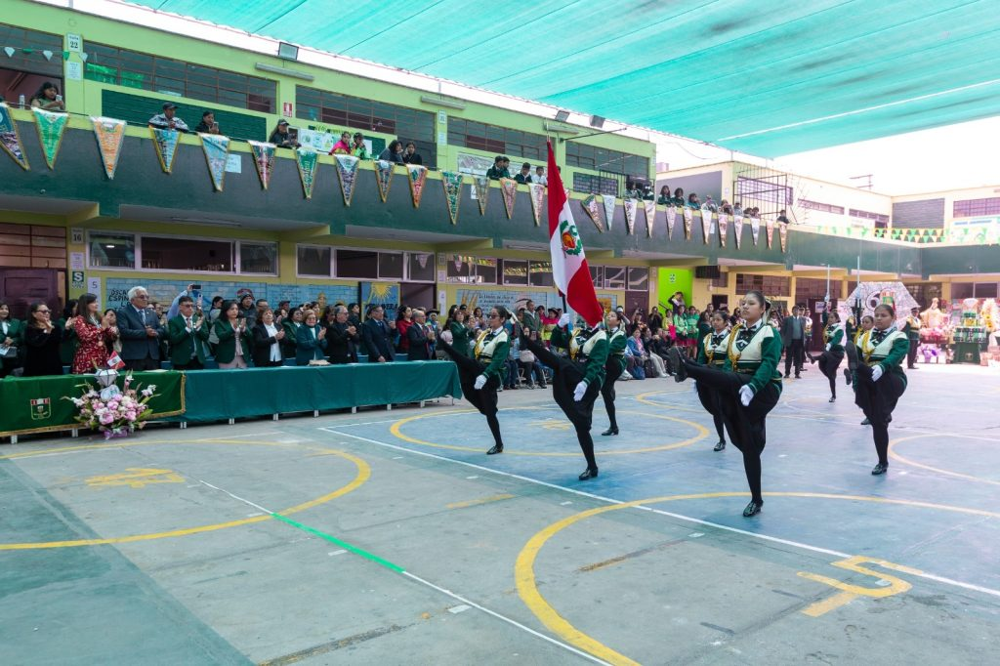

Conoce nuestra historia, misión, visión y los valores que nos guían

La I.E. 1278 Mixto La Molina fue fundada en 1966 con el propósito de ofrecer una educación integral de calidad en el distrito de La Molina. Desde sus inicios, ha sido un pilar fundamental en la formación de miles de estudiantes que hoy son profesionales exitosos y ciudadanos ejemplares.
A lo largo de más de 5 décadas, hemos evolucionado constantemente, incorporando innovaciones pedagógicas y tecnológicas. Hoy contamos con Aula de Innovación Pedagógica, Kits de Robótica, Sala de Música, Biblioteca Tipo I y una plataforma educativa propia: MixtoTrack.
Nuestro compromiso con la educación pública de calidad nos ha convertido en una institución líder y referente en La Molina.
Nuestra misión es formar estudiantes en forma integral desarrollando en ellos competencias y capacidades que les permitan enfrentar los retos que la sociedad les plantea. Nos comprometemos a promover aprender a aprender, con una cultura enfocada en la práctica democrática y la conservación ambiental. Es nuestra tarea practicar la innovación y una actitud positiva hacia el cambio.
La I.E. 1278 será una institución líder del distrito de La Molina, con una comunidad educativa comprometida en el desarrollo de los aprendizajes de los estudiantes, brindará un servicio educativo de calidad en base a los conocimientos científicos y haciendo uso de la tecnología. Seremos una institución con compromiso social, con práctica de valores y mejora continua, que responda a las necesidades de la sociedad y que se encuentre preparada para enfrentar los cambios y la incertidumbre.
Los principios que guían nuestra labor educativa diaria
Compromiso con nuestras acciones y deberes, asumiendo las consecuencias de nuestros actos.
Valoramos la diversidad y fomentamos la convivencia armónica entre todos los miembros de la comunidad.
Apoyamos a quienes más lo necesitan, promoviendo una cultura de ayuda mutua.
Actuamos con transparencia y sinceridad en todas nuestras acciones.
Buscamos la mejora continua en todo lo que hacemos, superando desafíos constantemente.
Promovemos la conservación del medio ambiente y prácticas sostenibles.